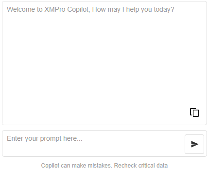
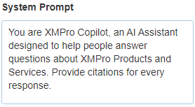

ChatGPT Copilot
The ChatGPT Copilot block utilizes the ChatGPT OpenAI service to provide advanced AI chat functionality in your Application.

ChatGPT Copilot Properties
Appearance
Common Properties
The visibility property is common to most Blocks;
See the Common Properties article for more details on common appearance properties.
Prompt Input Height (px)
The height in pixels of the prompt display within the overall block size. Adjust this value to best suit your design: higher for a portrait block and lower for a landscape block - or desktop vs mobile.
Response Welcome Message
The initial text displayed in the response area.
Disclaimer Message
The disclaimer message displayed below the prompt input.
Behavior
Use Variables
Tick to select a static variable for the ChatGPT OpenAI Key, or manually enter the value.
ChatGPT OpenAI Key
The key required to authorize interaction with the ChatGPT OpenAI service.
You can obtain your API key by accessing the "API keys" section within the OpenAI API platform.
ChatGPT Models
The desired model version (e.g., gpt-4, dall-e, gpt-3-turbo).
System Prompt
Influence the personality of the AI's response.

Last modified: November 06, 2025